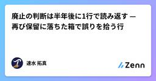
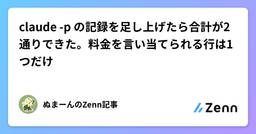
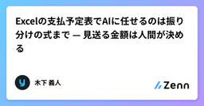
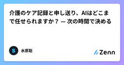

Zennの「生成 AI」のフィード
フィード

iPhone 18 Proで読み込めるローカルLLMの選び方 — Off Grid AI
Zennの「生成 AI」のフィード
!この記事は、notheme.me の元記事「iPhone 18 Pro と Off Grid AI で始めるローカルLLM — モデルの選び方、ファイル名の読み方、自分でインストールするときの注意点」を、Zenn で読みやすい分量に書き直したものです。ファイル名の読み方、自分でインストールするときの注意、アライメントの説明は、元記事に詳しく書いてあります。iPhone の中だけで文章生成AIを動かすローカルLLMは、メモリ 12GB の iPhone 18 Pro で実行できる選択肢になりました。この記事では、オープンソースのアプリ Off Grid AI を使う前提で、メモリに...
1時間前
Claude Code から呼べるローカル音楽生成環境を作った（ACE-Step 1.5 + MCP + Apple Silicon）
Zennの「生成 AI」のフィード
はじめに前回の記事では、Claude Code から呼べるローカル画像生成環境を作りました。ゲームや動画の素材をローカルだけで作りたいので、次は BGM です。音楽生成モデルの ACE-Step 1.5 を使って、Claude Code に「子ども向けゲームのタイトル画面の BGM を、ループ用に作って」と頼むだけで曲ができる環境を作りました。Mac だけで動き、生成はすべてローカルです。30 秒の曲が約 9 秒でできます。実際に作った曲はこちらです（すべて AI 生成、MP3）。カフェ風のジャズピアノトリオ（26.8 秒）昼寝シーンのループ曲（22.0 秒、ルー...
2時間前

廃止の判断は半年後に1行で読み返す — 再び保留に落ちた箱で誤りを拾う行
Zennの「生成 AI」のフィード
降格表の運用では、廃止にした箱の行も「廃止」の形で残り続けます。前回の保留箱は月1回の見直しで再開か廃止かでは、保留に置いた箱を1か月を超えて置かない基準で、再開か廃止かに1行で落としました。廃止は箱を表から消す処理ではありません。形の列を「廃止」に書き替えて、行を降格表に残します。残った行は、半年後に読み返すことで初めて意味を持ちます。今回は、廃止の判断を半年後に1行で読み返す扱いです。AI案に戻した箱が再び保留に落ちたとき、判断の誤りをどの行で拾うかを決めます。 1. 廃止の行は何を記録しているか廃止は判断の記録: 形の列が「廃止」、戻る基準の列に「廃止 2026-10」...
4時間前
介護のご家族への連絡と面談、AIはどこまで任せられますか？ — 受け取る家族で決める
Zennの「生成 AI」のフィード
昨日は、ケア記録と申し送りの仕事で、介護の現場に寄せて読む1回目を書いた。本稿はその2回目で、昨日予告した通り、同じ介護の現場の、ご家族への連絡と面談の記録の仕事を置く。月次のご様子の連絡文のたたき台や面談日の日程調整、面談の議事メモの項目の整理は機械が速くそろえられる。しかし連絡文の1行は、同じ「事実」でも、受け取るご家族によって、まず聞きたいことと受け止め方が変わる仕事で、この境目の切り方に、ご家族と現場の間に立つ介護の現場はつまずいている。ご家族への連絡とは、月々のご様子や体調の変化・事故の報告を、ご家族に渡す仕事のことだ。面談の記録とは、面談で交わした希望や約束を、ケア計画と現場...
5時間前

claude -p の記録を足し上げたら合計が2通りできた。料金を言い当てられる行は1つだけ
Zennの「生成 AI」のフィード
Claude Code のセッションを一覧にするアプリを作った人が、紹介文に「推定値の限界も書いた」と添えていたのが気になりました。アプリ本体とその解説は手元の環境から開けないので中身には触れません。代わりに、自分の手元でclaude -p(画面を開かず、コマンドとして AI に1回だけ仕事を頼む使い方)を11回走らせ、終わったあとディスクに残った記録だけを読んで、そこから何が組み直せるのかを調べました。分かったことを先に4つ書きます。いつ・どのフォルダで・何を頼んだかは、記録からほぼそのまま組み直せる。自動生成された見出しまで残っている。送った量の合計は、足し方によっ...
5時間前

Excelの支払予定表でAIに任せるのは振り分けの式まで — 見送る金額は人間が決める
Zennの「生成 AI」のフィード
払う分を先に1枚に並べて、今月と翌月に振り分ける月末の入金側の表が済むと、次は同じ形の支払側の表が来ます。仕入先ごとの買掛残高を1枚に並べて、今月中に払う分と翌月に回す分に振り分ける。この1枚が支払予定表です。残額と支払期日と区分が並ぶだけの単純な表なのに、手で作ると行ごとに期日を数えて、約束を思い出して、振込の額を直すことになります。仕入先の件数が増えた月に、この地道さが響いてきます。前回は未回収リストを扱いました。今回は支払予定表を、同じ「Excel側の前準備 → AIへの依頼文 → 検算」の3段階で組みます。支払側でAIに任せるのは、残額と残日数を計算して今月払いと翌月払い...
6時間前

生成AIは何を考えているか（2026年10月版）
Zennの「生成 AI」のフィード
AIの気持ちを理解する 第1章 AIはどんな相手なのかAIは、コンピュータと言うにはあまりにも人間すぎ、人間と言うにはあまりにもアルゴリズムすぎます。 1.1 コンピュータではないAIを、これまでのコンピュータと同じ感覚で考えると、想像を超えるほど違う動きをします。AIは計算を間違えます。指示も忘れます。同じことを頼んでも、毎回答えが変わります。これまで「コンピュータなら当然できる」と考えていたことさえ、AIは平然と失敗します。従来の「正確に、決められた通りに動くコンピュータ」という感覚では、AIの挙動をうまく理解できません。 1.2 人間として付き合うむしろ、A...
6時間前

ネットが燃えている――GMOの国家への要請と、守る側が不利なわけ
Zennの「生成 AI」のフィード
一緒に仕事をしている PHP に長けるシニア・エンジニアが昨日つぶやいた。「もうこれ、インターネット環境が破壊されているのと同じです……」大げさにも聞こえるが、彼は連日のように発生するセキュリティインシデントの調査に追われているようで、現場から出てきた言葉だと思うと、私も部外者ではないので笑ってもいられない。2026 年 10 月 24 日。GMO インターネットが政府に対して「能動的サイバー防御」の適用を緊急要請したというニュースが飛び込んできた。能動的サイバー防御の関連制度は、10 月 1 日に主要部分が施行されたばかりで、大きく次の 3 本柱となっている。柱内容...
7時間前

Kimi K3.1 Pro は Claude Opus 5.5 や GPT-6 Astra にどこまで迫ったのか
Zennの「生成 AI」のフィード
はじめに：重みが配られるモデルが、最上位の表に入ってきた2026年10月23日、中国の Moonshot AI が新しいモデル Kimi K3.1 Pro と、その高速版 Kimi K3.1 Pro Highspeed を公開しました。発表の目玉は、コーディングエージェントの代表的なベンチマーク Terminal-Bench 4.0 で 65.7% と、GPT-6 Astra（58.2%）を上回り、Claude Opus 5.5（66.4%）に迫ったという数字です。しかも 11月4日までにモデルの重み（学習済みのパラメータそのもの）を公開する予定です。ここ数年、「重みが公開され...
8時間前

AIに「買い」を決めさせない：投資ツールでAIに任せること、任せないこと
Zennの「生成 AI」のフィード
!この記事は、自分用に作っている投資ツールの「設計の考え方」を紹介するものです。特定の銘柄の売買を推奨するものではありません。投資判断はご自身で行ってください。 はじめにルールベース株研です。Claude Code で日本株の投資ツールを2つ作っています。前回の記事の最後で、次は仕様書の話を書くと予告していました。ただ、Xで一番反応が多かったのが「AIに買い・売りを決めさせない」という投稿だったので、先にこちらを書くことにしました。仕様書の話は次回に回します。AIを使った投資ツールと聞くと、「AIが買い時を教えてくれる」ものを思い浮かべる人が多いと思います。私のツールはその...
9時間前

ローカルLLMに必要なVRAMは何GB？計算方法とモデル別の早見表【2026年版】
Zennの「生成 AI」のフィード
「家のPCでLLMを動かしたいけど、どのGPUを買えばいいの？」いちばん大事なのは、GPUの性能よりVRAM（GPUのメモリ）の容量です。この記事では、必要なVRAMの計算方法と、人気モデルの早見表をまとめます。 結論：必要なVRAMはこの式で出せる必要なVRAM ≒ モデル本体 ＋ 会話の記憶領域（KVキャッシュ） ＋ 余白 約1GBモデル本体 ≒ パラメータ数（B）× 量子化ごとのサイズ量子化ごとの1パラメータあたりのサイズは、だいたい次のとおりです。量子化1パラメータあたり8Bモデルの本体4bit（Q4）約0.6バイト約4.8GB8bit...
11時間前

Claude Codeのサブフォルダの CLAUDE.md が先頭だけになる境目を測ったら、200Kは4万字、1Mは15万字でした
Zennの「生成 AI」のフィード
Claude Code の CLAUDE.md、育てているうちに長くなっていませんか。おじさんのところも、部署ごとのフォルダに CLAUDE.md を置いていて、いちばん長いものは1万5千字を超えています。10月23日に出た Claude Code の v2.1.309 で、「サブフォルダの CLAUDE.md が上限を超えたら、先頭だけを読む」という動きが入りました。何文字から先頭だけになるのかが気になったので、10月24日に検証用のフォルダで測ってみました。結果は、公式 docs の数字どおりでした。200K の文脈窓では 40,000字ちょうどまでは全文、40,100字で先頭だ...
11時間前

AIコードレビューの不合格率が51%→13%に。3モデル中2つは判定していなかった
Zennの「生成 AI」のフィード
自分用のタスク管理アプリを、4ヶ月半ほど自律エージェントに開発させている。実装後の diff を別のモデルにレビューさせ、不合格なら差し戻す「敵対的差分レビュー」を入れていた。その不合格率が、7月の51.1%から10月には13.4%まで下がっていた。ところがログを調べると、3モデルでレビューするはずが、10月は全209件で1モデルしか判定していなかった。残りの2モデルは、すべて unknown（判定不能）。集計処理はそれを除外し、回答した1モデルだけで合否を決めていた。有効な判定が減っていることは、ゲートの異常として通知されていなかった。指標としては良くなっていたので、私はそれを素...
14時間前

Made in Ningen 「人間産コード」は本当に安心なのか
Zennの「生成 AI」のフィード
はじめにこんにちわ。家電量販店で箱の裏を見て「Made in ○○か……」とつぶやいた経験、誰にでもあると思います。2026年、コードにも同じ光景が生まれました。PRを開いて、diffを眺めて、こうつぶやくのです。「これ、Made in AI だな……」この記事は、いま静かに始まっている（と思っている）「Made in Ningen（人間が作ったかどうか）」vs「Made in AI」論争を、かつての「国産 vs 海外製」論争になぞらえて、くだけた感じに、でも最後だけ少し真面目に書いたものです。 第1章：かつて「Made in Ningen」はブランドだった思い返...
16時間前

AI運用の変更を3段階で通知する影響先マップの作り方
Zennの「生成 AI」のフィード
AIのプロンプト、参照FAQ、フォーム項目、確認者を変更した時、関係者全員へ同じ通知を送っていないでしょうか。全員へ知らせると見落とされやすくなり、知らせないと古い条件で返信や確認が続きます。問題は「変更を通知するか」だけではなく、どの変更を、誰へ、いつまでに伝え、どの証拠を残すかを決めていないことです。この記事では、AIを使った問い合わせや社内業務を小さく運用しているチーム向けに、変更を STOP_REVIEW、SAME_DAY_NOTIFY、ROUTINE_LOG の3段階へ振り分ける影響先マップを作ります。外部サービスへの自動通知やAI API接続は扱わず、判断と通知の境界を...
20時間前

保留箱は月1回の見直しで再開か廃止か — 1か月を超えて置かない1行の判定
Zennの「生成 AI」のフィード
商談前メモ5箱の運用では、判断に迷った箱を「保留」に置くことがあります。前回の5箱の状態は月次報告の1行に足すでは、AI案・採用・▲・保留の箱数と前月比を月次報告1枚の来月方針1行に足す書式を扱いました。保留は、止めた行は消さずに降格させるで定めた止めた行の4つの行き先のうちの1つです。保留に置いた箱は放置すると永遠に保留のまま残ります。今回は、保留箱を月1回の見直しで回す扱いです。再開（AI案へ戻す）と廃止（表から消す）の間を、保留を1か月より長く置かない基準で決めます。 1. 保留は何のための置き場か保留は判断の保留: 降格を下す材料がその月になかった箱を置いておく場所で...
1日前

AI採用は面接官を“置き換える”のではなく“支える” ― 面接官アシストを作って考えたこと
Zennの「生成 AI」のフィード
本記事の原文（初出）: https://crystal-method.com/ai-hiring/ この記事について（一次情報の明示）バーチャルヒューマンを開発するAI企業・クリスタルメソッド株式会社が、採用面接を支援するAIを作る中で得た実装者視点の記録です。監修は代表・河合継（AIマルチモーダル関連の発明者。当社の登録特許は16件）。 AI採用で何を解きたいか採用面接には、面接官の負荷・評価のばらつき・候補者体験という課題があります。「AIが面接官を全部やる」より、まずここを支えるのが現実的だと考えました。 私たちの設計方針 ― 置き換えでなく“アシスト”面接の...
1日前

介護のケア記録と申し送り、AIはどこまで任せられますか？ — 次の時間で決める
Zennの「生成 AI」のフィード
昨日は、資材の手配と受入の仕事で、建設の現場に寄せて読む3回目を書いた。昨日予告した通り、本稿からは新しい区切りに入り、この型を介護の現場に寄せて読む1回目として、ケア記録と申し送りの仕事を置く。ケア記録のたたき台や介護保険の加算要件との突き合わせ、申し送りメモの項目の整理は機械が速くそろえられる。しかし申し送りは、同じ「気づき」の1行が次のシフトの職員の、その人と過ごす時間の使い方を変える仕事で、この境目の切り方に、夜勤と日勤の間に立つ介護の現場はつまずいている。申し送りとは、シフトが変わる席で、次に入所されている方を預かる職員へ、その日の様子を渡す仕事のことだ。 今月の相談：90...
1日前

Google の Harness² を Mac で動かしてみた
Zennの「生成 AI」のフィード
はじめにClaude Code や Codex のような AI エージェントを仕事で使っていると、同じモデルなのに「指示文を1行足しただけで急にうまくいく」「スキルを1つ作ったら失敗が消えた」という経験をよくします。モデルの性能だけでなく、モデルの周りに置く道具立てが結果を大きく左右するからです。この道具立てを、最近は ハーネス（harness） と呼びます。システムプロンプト、守るべき決まり、スキル、補助スクリプト、サブエージェントなど、モデルを「仕事ができるエージェント」にするための仕組み全体のことです。ただ、ハーネスの調整はたいてい人の手仕事です。失敗した実行ログを読み...
1日前

AI鑑識学をつくる — 開発の試行錯誤とv5への変遷
Zennの「生成 AI」のフィード
文章を読んだときの違和感を、どのように確かめられる観察へ変えていくか。特徴の収集、関係と機能の記録、保留の設計、v5.1・v5.2の実装と引用の失敗までをたどる開発ノート。現在も続く開発の途中経過を、具体例から読み解きます。
1日前